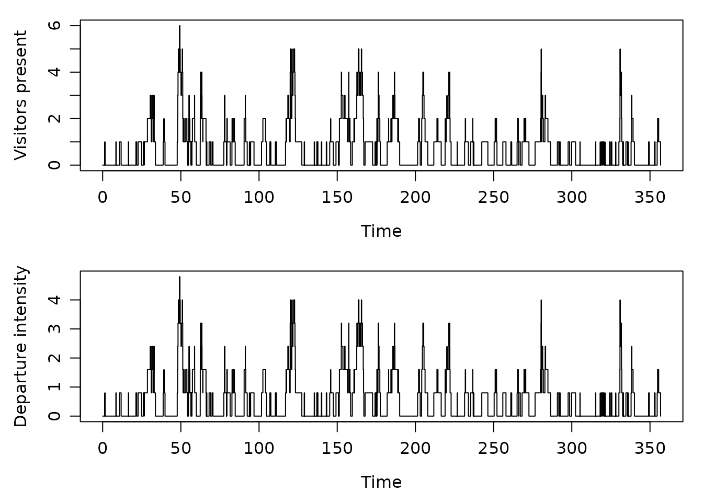

State-dependent baseline models
Kyungsub Lee
2026-10-20
Source:vignettes/articles/state-dependent-baseline.Rmd
state-dependent-baseline.RmdThese examples reconstruct the current state from event counts and
use it in the baseline function mu. Fosset’s spread model
disables narrowing at the minimum spread; the queue model makes
departures proportional to the number of visitors present. Each model
defines its own specification and simulated data.
See the examples overview for other model topics.
Fosset’s state-dependent spread model
Fosset, Bouchaud and Benzaquen (2020), Endogenous Liquidity Crises, Section 4.1, equations (8a)–(8b), model spread widening and narrowing as two event types. Let and count these events and let the spread, in ticks, be
Their linear model has predictable intensities
Only widening events excite future widening. Narrowing is disabled at
a one-tick spread. We use
for the paper’s
and
for its
.
The package’s alpha[1, 1] is therefore
;
is the integrated excitation, not the jump size. The other
alpha entries are fixed zeros. Both event types have unit
marks.
The example uses positive rates, , and an explicit zero initial excitation. This restricts the example to a Hawkes-stable widening process. A stationary spread additionally requires . The values below are chosen for a stationary-spread illustration. The nonlinear models later in the paper are separate specifications.
Define mu, alpha, and beta
directly, then construct the hspec object. Rows identify
affected event types, and columns identify triggering event types. Log
rates enforce positivity, and a logit parameter enforces
.
The shared name log_b keeps the same decay parameter in
alpha and beta.
spread0_fosset <- 1
mu <- function(param = c(log_nu_plus = log(1), log_nu_minus = log(3)), n, N) {
previous_event <- max(1L, n - 1L)
spread <- spread0_fosset + N[previous_event, 1] - N[previous_event, 2]
matrix(c(exp(param[["log_nu_plus"]]),
exp(param[["log_nu_minus"]]) * (spread >= 2)), nrow = 2)
}
alpha <- function(param = c(logit_a = qlogis(0.4), log_b = log(2))) {
jumps <- matrix(0, nrow = 2, ncol = 2)
jumps[1, 1] <- plogis(param[["logit_a"]]) * exp(param[["log_b"]])
jumps
}
beta <- function(param = c(log_b = log(2))) {
matrix(exp(param[["log_b"]]), nrow = 2, ncol = 2)
}
h_fosset <- new("hspec", mu = mu, alpha = alpha, beta = beta)For the baseline callback, N[n - 1, ] describes the
state before event n. The same callback is called with
n + 1 after the jump, so the narrowing rate changes
immediately when the spread reaches or leaves one tick.
set.seed(20261018)
path_fosset <- hsim(h_fosset, size = 4001, lambda_component0 = 0)
spread_fosset <- spread0_fosset + path_fosset$N[, 1] - path_fosset$N[, 2]
stopifnot(all(spread_fosset >= 1),
all(path_fosset$lambda[c(spread0_fosset, head(spread_fosset, -1)) == 1, 2] == 0),
all(path_fosset$rambda[spread_fosset == 1, 2] == 0))
plot(path_fosset$arrival, spread_fosset, type = "s",
xlab = "Time", ylab = "Spread (ticks)")Estimate all four model parameters from a different starting point.
The example uses R’s stats optimizer and the default numerical gradient.
Automatic engine selection uses the supported C++ likelihood; simulation
of this count-dependent baseline uses the R path. No analytic Jacobians
are required. Change the default param vectors to choose
fitting starting values, then create a second hspec.
formals(mu)$param <- c(log_nu_plus = log(0.7), log_nu_minus = log(2.5))
formals(alpha)$param <- c(logit_a = qlogis(0.25), log_b = log(1.2))
formals(beta)$param <- c(log_b = log(1.2))
start_fosset <- new("hspec", mu = mu, alpha = alpha, beta = beta)
fit_fosset <- hfit(start_fosset,
inter_arrival = path_fosset$inter_arrival, type = path_fosset$type,
lambda_component0 = 0, optimizer = "stats", method = "BFGS",
control = list(maxit = 500, reltol = 1e-10))
theta_fosset <- coef(fit_fosset)
estimated_fosset <- c(
nu_plus = exp(theta_fosset[["log_nu_plus"]]),
nu_minus = exp(theta_fosset[["log_nu_minus"]]),
a = plogis(theta_fosset[["logit_a"]]),
b = exp(theta_fosset[["log_b"]]))
cbind(true = c(nu_plus = 1, nu_minus = 3, a = 0.4, b = 2),
estimated = estimated_fosset)
#> true estimated
#> nu_plus 1.0 0.9811201
#> nu_minus 3.0 3.0865001
#> a 0.4 0.4240015
#> b 2.0 1.7920735
fit_diagnostics(fit_fosset)$status
#> [1] "ok"
fit_diagnostics(fit_fosset)$computation$engine
#> $requested
#> [1] "auto"
#>
#> $used
#> [1] "cpp"
#>
#> $fallback_reason
#> NULLThe estimated coefficients are on the log/logit scale. Parameter recovery varies between realizations; inspect convergence and uncertainty rather than expecting exact recovery from a single path.
There is an independent check for the narrowing rate. If is the time spent with , its log-likelihood contribution is . Its maximum is . The observation window ends at the last supplied event.
open_time_fosset <- sum(path_fosset$inter_arrival[-1] *
(head(spread_fosset, -1) >= 2))
c(fitted = estimated_fosset[["nu_minus"]],
independent = sum(path_fosset$type == 2) / open_time_fosset)
#> fitted independent
#> 3.0865 3.0865
restored_fosset <- fitted_hspec(fit_fosset)
replay_fosset <- do.call(logLik, c(list(object = restored_fosset,
inter_arrival = path_fosset$inter_arrival, type = path_fosset$type,
infer = TRUE), fit_initial_state(fit_fosset)))
stopifnot(isTRUE(all.equal(as.numeric(logLik(fit_fosset)),
unname(replay_fosset$loglikelihood), tolerance = 1e-8)))A Hawkes/M/infinity queue: website visits and departures
Daw and Pender (2018), Queues Driven by Hawkes Processes, Section 3, define a Hawkes/PH/infinity queue. With one exponential service phase, their model is a Hawkes/M/infinity queue. Interpret arrivals as website visits and service completions as departures. Every visitor starts service immediately; counts all visitors still present in the system.
Let and count visits and departures. With initial population and zero initial excitation, the model is
Here is the arrival baseline, is the jump in arrival intensity, is its decay rate, and is the mean service time. In the paper’s notation, these are , , , and the single-phase service rate. Unlike the normalized kernel in the preceding spread example, this kernel has jump size and integrated excitation .
The arrival process is an autonomous Hawkes process. The population affects the departure intensity, while an arrival’s contribution to future arrivals continues to decay after that visitor leaves. This is exactly the single-phase special case of the paper’s queueing model.
Define the three components and construct the hspec
object directly. Log parameters keep all four rates positive, and the
function-valued alpha keeps its three structural zeros
fixed during estimation. The example uses
for a stable arrival process; the log parameterization alone does not
enforce that inequality.
q0_queue <- 0
mu <- function(param = c(log_nu = log(0.4), log_delta = log(0.8)), n, N) {
previous_event <- max(1L, n - 1L)
population <- q0_queue + N[previous_event, 1] - N[previous_event, 2]
matrix(c(exp(param[["log_nu"]]),
exp(param[["log_delta"]]) * population), nrow = 2)
}
alpha <- function(param = c(log_a = log(0.5))) {
jumps <- matrix(0, nrow = 2, ncol = 2)
jumps[1, 1] <- exp(param[["log_a"]])
jumps
}
beta <- function(param = c(log_b = log(1.2))) {
matrix(exp(param[["log_b"]]), nrow = 2, ncol = 2)
}
h_queue <- new("hspec", mu = mu, alpha = alpha, beta = beta)Event type 1 is a visit and event type 2 is a departure. The baseline
callback reads N[n - 1, ] to obtain the population before
event n. After the event it is called with
n + 1, so the departure rate changes immediately. When
,
the departure rate is zero without a separate boundary correction.
set.seed(884102)
path_queue <- hsim(h_queue, size = 6001, lambda_component0 = 0)
population_queue <- q0_queue + path_queue$N[, 1] - path_queue$N[, 2]
population_before_queue <- c(q0_queue, head(population_queue, -1))
stopifnot(all(population_queue >= 0),
all(population_before_queue[path_queue$type == 2] > 0),
all(path_queue$rambda[population_queue == 0, 2] == 0))For a readable view, plot the first 400 events. rambda
contains the intensity immediately after each event, so its second
column equals
.
local({
old_par <- par(mfrow = c(2, 1), mar = c(4, 4, 1, 1), mgp = c(2.5, 0.8, 0))
on.exit(par(old_par))
shown <- seq_len(min(401L, length(path_queue$arrival)))
plot(path_queue$arrival[shown], population_queue[shown], type = "s",
xlab = "Time", ylab = "Visitors present")
plot(path_queue$arrival[shown], path_queue$rambda[shown, 2], type = "s",
xlab = "Time", ylab = "Departure intensity")
})
Estimate the four rates from both arrival and departure times. This uses the stats optimizer with numerical differentiation. Simulation uses the R event loop for the state-dependent baseline; automatic likelihood selection supports the C++ engine for this observed-count callback.
formals(mu)$param <- c(log_nu = log(0.3), log_delta = log(1.1))
formals(alpha)$param <- c(log_a = log(0.3))
formals(beta)$param <- c(log_b = log(0.9))
start_queue <- new("hspec", mu = mu, alpha = alpha, beta = beta)
fit_queue <- hfit(start_queue,
inter_arrival = path_queue$inter_arrival, type = path_queue$type,
lambda_component0 = 0, optimizer = "stats", method = "BFGS",
control = list(maxit = 500, reltol = 1e-10))
theta_queue <- coef(fit_queue)
estimated_queue <- c(
nu = exp(theta_queue[["log_nu"]]),
delta = exp(theta_queue[["log_delta"]]),
a = exp(theta_queue[["log_a"]]),
b = exp(theta_queue[["log_b"]]))
cbind(true = c(nu = 0.4, delta = 0.8, a = 0.5, b = 1.2),
estimated = estimated_queue)
#> true estimated
#> nu 0.4 0.3919561
#> delta 0.8 0.8117900
#> a 0.5 0.5657843
#> b 1.2 1.3811091
fit_diagnostics(fit_queue)$status
#> [1] "ok"The likelihood factorizes into an arrival contribution and a departure contribution. Over the observation window ending at the last supplied event, the latter is, up to parameter-independent terms,
Thus provides an independent check of the fitted service rate. Restore the fitted specification and replay the same data to check that its likelihood is preserved.
person_time_queue <- sum(path_queue$inter_arrival[-1] * head(population_queue, -1))
c(fitted = estimated_queue[["delta"]],
independent = sum(path_queue$type == 2) / person_time_queue)
#> fitted independent
#> 0.8117900 0.8117901
restored_queue <- fitted_hspec(fit_queue)
replay_queue <- do.call(logLik, c(list(object = restored_queue,
inter_arrival = path_queue$inter_arrival, type = path_queue$type,
infer = TRUE), fit_initial_state(fit_queue)))
stopifnot(isTRUE(all.equal(as.numeric(logLik(fit_queue)),
unname(replay_queue$loglikelihood), tolerance = 1e-8)))This example starts with q0_queue = 0. For a nonempty
initial system, set q0_queue before defining
mu and keep it fixed through simulation and fitting.
Initial population and initial Hawkes excitation are distinct:
q0_queue counts visitors already present, while
lambda_component0 describes the remaining excitation from
arrivals before the observation window.